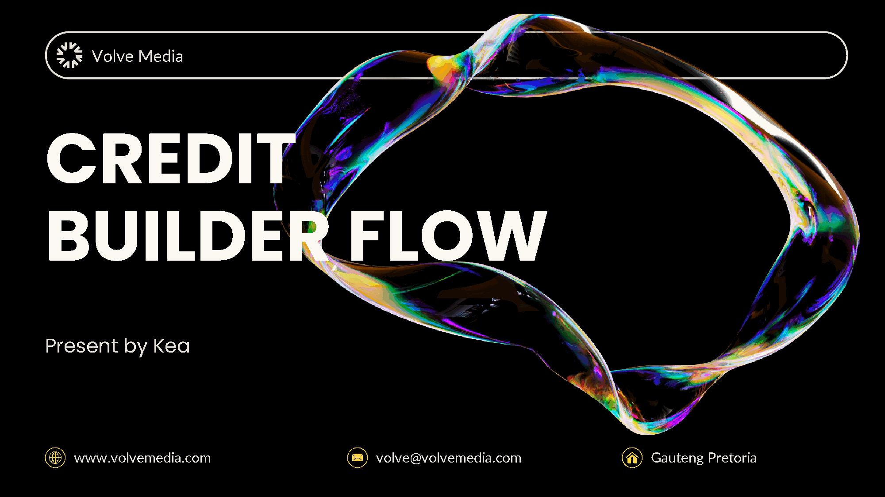
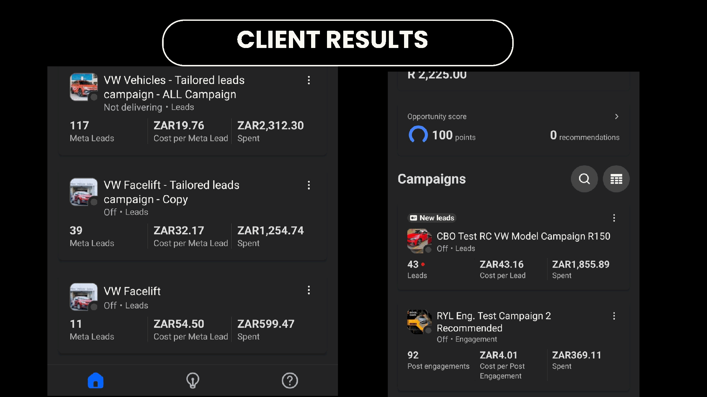
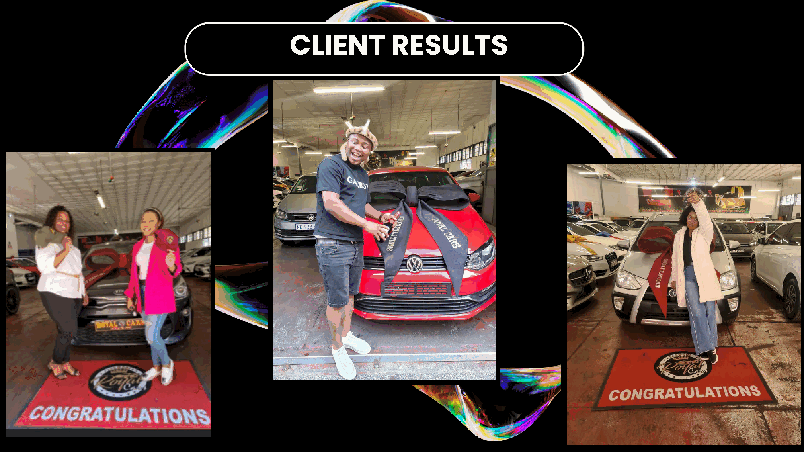
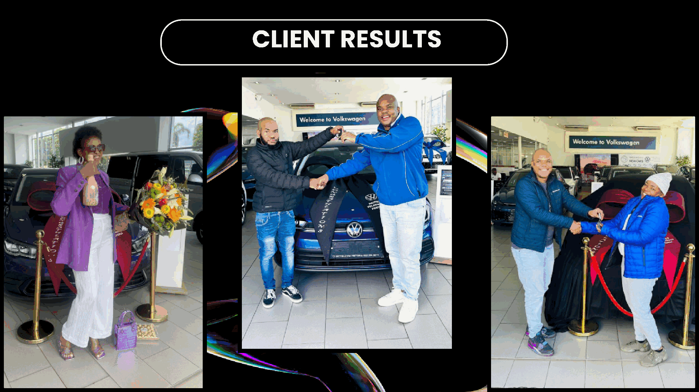
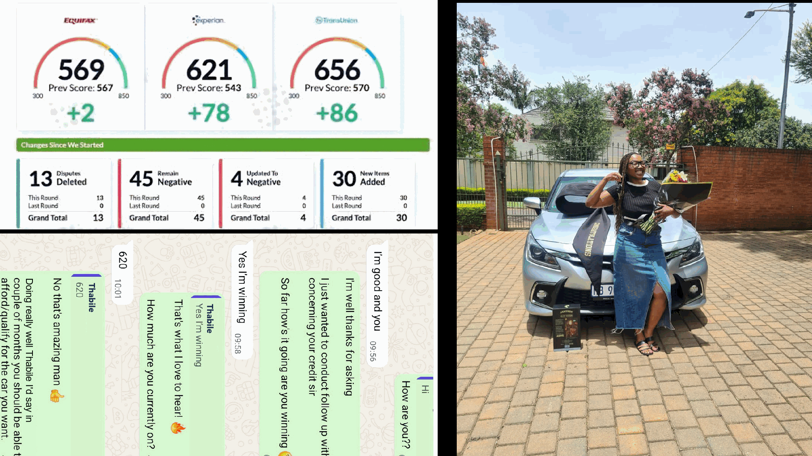
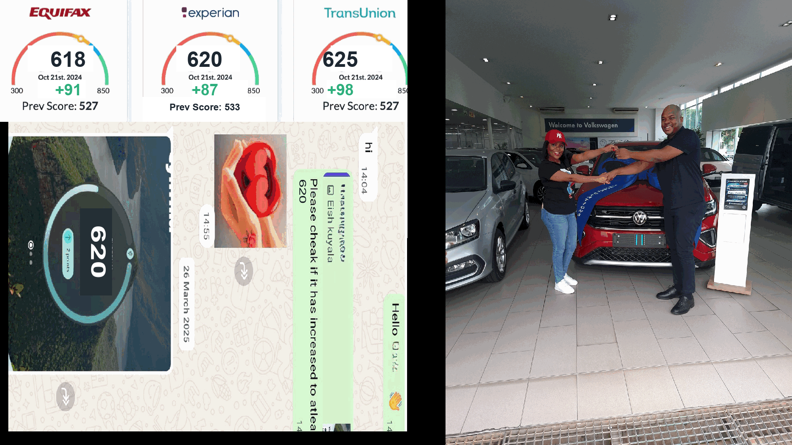
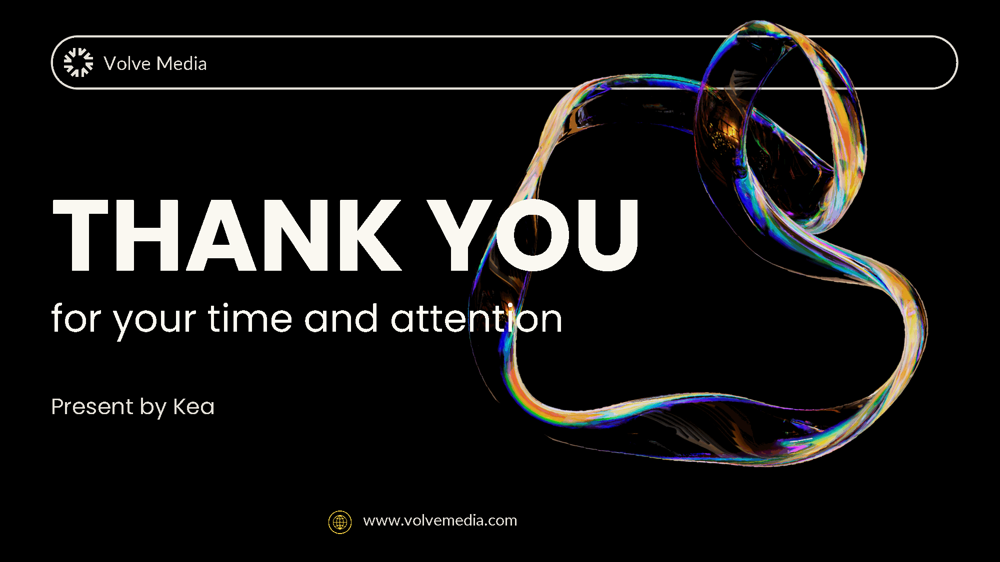

We originally started as Volve Media — an automotive advertising agency generating thousands of buyer leads for dealerships across South Africa.
The ads worked and showrooms were full, yet month after month Dealer Principals told us the exact same thing:
We refused to be just another agency dumping raw traffic onto an F&I desk. We built Credit Builder Flow (CBF) to solve the credit bottleneck directly — turning declined showroom shoppers into bank-approved deliveries without adding work to your floor.
The only automotive agency and recovery engine in South Africa engineered to clear bank underwriting hurdles and deliver an 80%+ finance approval rate on the buyers we bring to your showroom.



Bank underwriting isn't a mysterious secret locked inside banking halls. Every automated decline comes down to measurable math and behavioral risk rules.
Lenders earn zero interest when they decline your customer. Banks actively want more funded deals — their scorecards only reject applicants showing behavioral signs of default.
We narrowed down the exact variables Signio and major SA lenders test before signing off finance — turning "mystery declines" into a repeatable engineering checklist.
When a buyer has real income and genuine purchase intent, fixing the specific mathematical and conduct tripwires restores them to prime-grade approval readiness.
Not every declined buyer can be saved. The first thing our underwriting desk does is split every file into two strict buckets — protecting your floor's time.
When a lender scores your customer on Signio, they aren't using mysterious code — their system is testing three plain questions. Fail even one, and the deal declines.
"Does this person owe anyone money right now, and are they actually paying the people they owe on time — or are there unpaid accounts and old arrears hanging over their head?"
"After they've paid everyone they owe, do they have enough money left over to pay our vehicle installment every month and still buy bread for their family for the next 30 days?"
"Day-to-day, how does this person actually live with their money? Are debit orders bouncing or living inside an overdraft with zero buffer — or do statements show responsible cash management?"
We fix the exact three checkpoints the banks test — transforming rejected applicants into clean, low-risk borrowers ready for Signio re-submission.
Every buyer you refer falls into one of three predictable timelines — managed 100% off-site by our desk.
Earned R25,000+/mo with flawless bank conduct, yet declined across all lenders over a 3-month overdue R300 MTN account. Only bottleneck was bureau reporting lag.
Substantial arrears plus unpaids & overdraft gave near-zero approval odds. First 30 days cleared arrears; simultaneously coached 90 days of disciplined banking as if paying the installment.
Debt-to-Income over 80% of salary. First 60 days aggressively restructured & paid down debt; next 90 days seasoned clean cash flow to prove affordability.


No more 45-minute file builds turning into unpaid therapy or dead leads rotting in your CRM. Your team performs one 10-second action — we handle the rest off-site.
When Signio returns a decline, your F&I or sales exec simply sends your store's unique referral link to the customer via WhatsApp. That is literally all your team does.
From that second, our underwriting desk collects Section 11 POPIA consent, audits statements, clears arrears, and guides the buyer's 90-day rehabilitation — completely off-site.
The next time your desk touches the file, the buyer returns with clean bureau records and prime-grade statements. You simply re-submit on Signio and deliver the vehicle.
"What stops you from taking my rehabilitated buyer and selling them to the dealership down the road?"
In the South African motor industry, Dealer Principals and F&Is talk every day. Flipping even one dealership's buyer to a competitor would get us blacklisted permanently within months.
Rehabilitating 20, 30, or 50 of your declined buyers every year generates hundreds of thousands in clean repeat partnership revenue — vastly outperforming flipping a single deal.
Every referral link is tagged strictly to your dealership in our bilateral pilot agreement. We only win when that car drives off YOUR showroom floor.
Unlocking found money from leads you already paid for — with zero capital risk.
Before daily showroom fires make the decision for you by default, compare the real downside and upside of all three options.
No complex multi-year contracts and no operational disruption. Prove the recovery math on leads you have already written off.
Grab 5 to 10 turned-down Signio applications from last week — buyers who already walked off your lot and generated R0.
We immediately separate unrecoverables, onboard viable buyers onto their recovery track, and update your desk on progress.
If we don't produce clean, pre-approved buyers ready to take delivery from your floor, you walk away having spent zero Rand.
